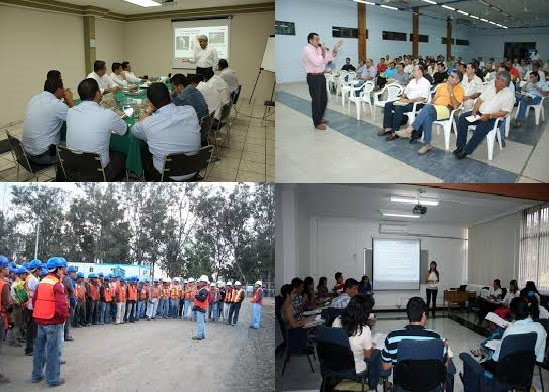

W&E Asesoría y Consultoría S.A.C.
Acerca de
W & E “ASESORIA Y CONSULTORIA S.A.C”.
Es una empresa con experiencia dando servicio de estudios, monitoreo ambiental, capacitación, así mismo nos dedicamos a desarrollar actividades de ingeniería en el sector minero, sector construcción, sector hidrocarburos, gobiernos locales, gobiernos regionales todo relacionado a la Seguridad, calidad, Conservación y Protección del Medio Ambiente, Contamos con profesionales especialistas multidisciplinarios.
Servicios
“La recuperación y el manejo ambiental es posible; Trabajemos juntos por un mundo mejor”
Capacitación en:
Medio Ambiente, Seguridad, Salud Ocupacional y Software de Ingeniería

Contáctenos
Póngase en contacto con nosotros y les brindaremos asesoría, capacitación, y demás evaluaciones ambientales